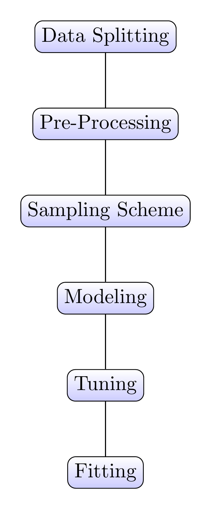
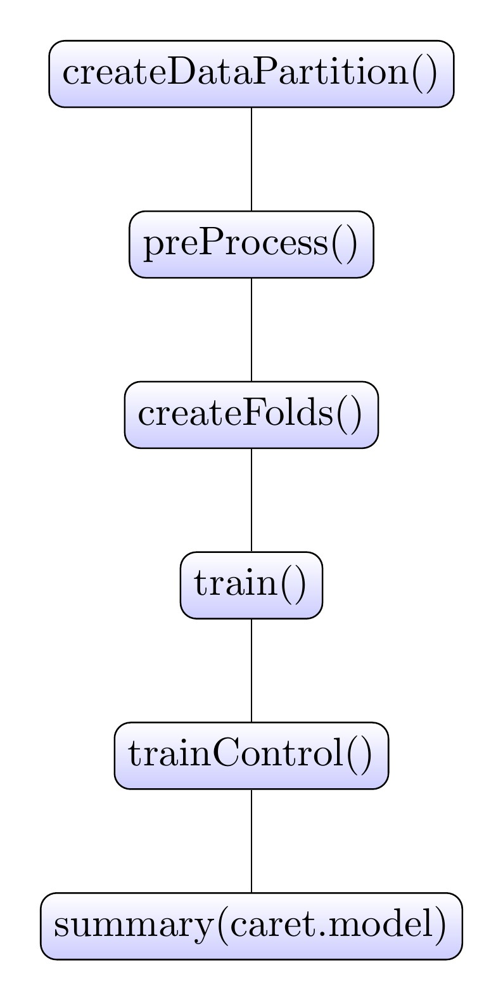
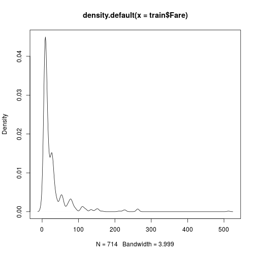
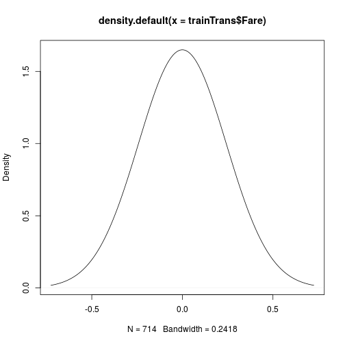
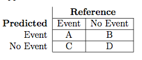
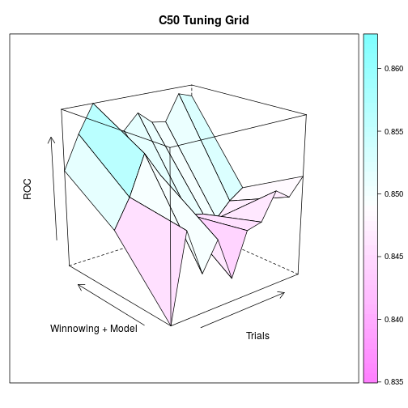
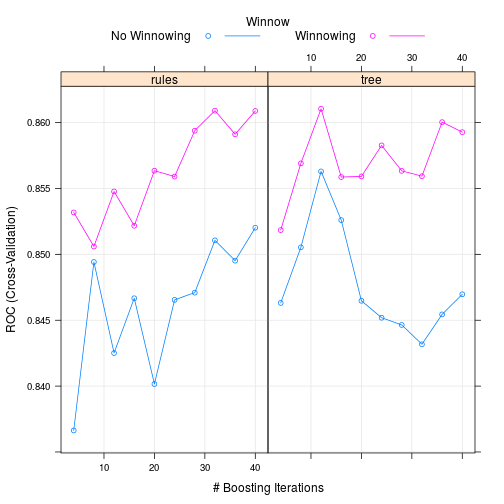
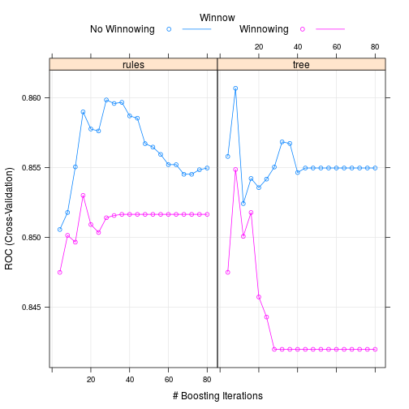
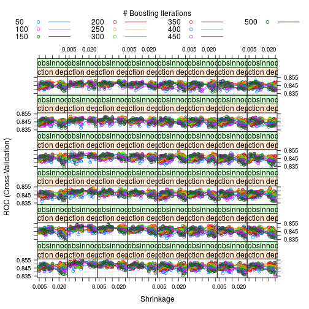
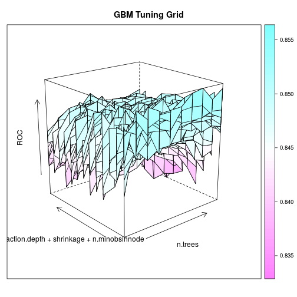

What is Caret
- Classification And REgression Training
- Meta language for uniform model building framework
- Algorithmically break down model building process
Steve Bronder
QMSS 2016

_

Want to create test and train set:
library(caret)
library(randomForest)
etitanic <- read.csv("TrainTitanic.csv",header=TRUE)
etitanic$Cabin <- substr(etitanic$Cabin, 1, 1)
etitanic[which(etitanic$Cabin == ""),"Cabin"] <- "No.Cabin"
etitanic$Cabin <- factor(etitanic$Cabin)
etitanic$Survived <- factor(etitanic$Survived, levels = c(0,1),labels = c("Dead","Alive"))
table(etitanic$Survived)
##
## Dead Alive
## 549 342
set.seed(4334)
x <- rep(0,100)
x[c(1,4,8,9,14)] <- 1
x
## [1] 1 0 0 1 0 0 0 1 1 0 0 0 0 1 0 0 0 0 0 0 0 0 0 0 0 0 0 0 0 0 0 0 0 0 0
## [36] 0 0 0 0 0 0 0 0 0 0 0 0 0 0 0 0 0 0 0 0 0 0 0 0 0 0 0 0 0 0 0 0 0 0 0
## [71] 0 0 0 0 0 0 0 0 0 0 0 0 0 0 0 0 0 0 0 0 0 0 0 0 0 0 0 0 0 0
sample(x,30)
## [1] 0 0 0 0 0 0 0 0 0 0 0 0 0 0 0 0 0 0 0 0 0 0 0 0 0 0 0 0 0 0
index <- createDataPartition(etitanic$Survived,
p = 0.8, # Percent of data that goes into training
list = FALSE, # do not return a list
)
ytrain <- etitanic[index,"Survived"]
ytest <- etitanic[-index,"Survived"]
train <- etitanic[index,-2]
test <- etitanic[-index,-2]
[[1]]
ytrain
Dead Alive
440 274
[[2]]
ytest
Dead Alive
109 68
'data.frame': 714 obs. of 11 variables:
$ PassengerId: int 1 2 3 4 5 6 7 8 9 10 ...
$ Pclass : int 3 1 3 1 3 3 1 3 3 2 ...
$ Name : Factor w/ 891 levels "Abbing, Mr. Anthony",..: 109 191 358 277 16 559 520 629 416 581 ...
$ Sex : Factor w/ 2 levels "female","male": 2 1 1 1 2 2 2 2 1 1 ...
$ Age : num 22 38 26 35 35 NA 54 2 27 14 ...
$ SibSp : int 1 1 0 1 0 0 0 3 0 1 ...
$ Parch : int 0 0 0 0 0 0 0 1 2 0 ...
$ Ticket : Factor w/ 681 levels "110152","110413",..: 525 596 662 50 473 276 86 396 345 133 ...
$ Fare : num 7.25 71.28 7.92 53.1 8.05 ...
$ Cabin : Factor w/ 9 levels "A","B","C","D",..: 8 3 8 3 8 8 5 8 8 8 ...
$ Embarked : Factor w/ 4 levels "","C","Q","S": 4 2 4 4 4 3 4 4 4 2 ...
preProcValues <- preProcess(train[,c("Fare","Age")],
method = c("center", "scale","BoxCox","expoTrans"))
trainTrans <- predict(preProcValues, train)
testTrans <- predict(preProcValues, test)
plot(density(train$Fare))

plot(density(trainTrans$Fare))

dummies <- dummyVars(~ ., data = train)
train <- predict(dummies, newdata = train)
test <- predict(dummies,newdata = test)
dim(train)
[1] 714 1593
table(train[,"Ticket.STON/O2. 3101279"])
0 1
713 1
nzv <- nearZeroVar(train, saveMetrics= TRUE)
head(nzv)
freqRatio percentUnique zeroVar
PassengerId 1.000000 100.0000000 FALSE
Pclass 2.352941 0.4201681 FALSE
Name.Abbing, Mr. Anthony 713.000000 0.2801120 FALSE
Name.Abbott, Mr. Rossmore Edward 0.000000 0.1400560 TRUE
Name.Abbott, Mrs. Stanton (Rosa Hunt) 713.000000 0.2801120 FALSE
Name.Abelson, Mr. Samuel 713.000000 0.2801120 FALSE
nzv
PassengerId FALSE
Pclass FALSE
Name.Abbing, Mr. Anthony TRUE
Name.Abbott, Mr. Rossmore Edward TRUE
Name.Abbott, Mrs. Stanton (Rosa Hunt) TRUE
Name.Abelson, Mr. Samuel TRUE
nzv <- nearZeroVar(train)
train <- train[,-nzv]
test <- test[,-nzv]
dim(train)
## [1] 714 14
## [1] 714 14
comboInfo <- findLinearCombos(trainTrans)
colnames(trainTrans)[comboInfo$remove]
if (length(colnames(train)[comboInfo$remove])!=0 &&
!is.character(colnames(train)[comboInfo$remove]) ){
train <- train[, -comboInfo$remove]
}


rfctrl <- rfeControl(functions = rfFuncs,
method = "cv",
number = 10)
trainTransprof <- trainTrans[complete.cases(trainTrans),]
ytrainprof <- ytrain[complete.cases(trainTrans)]
rfprofile <- rfe( trainTransprof , ytrainprof,
sizes = c(2:13),
rfeControl = rfctrl)
rfprofile$results
Variables Accuracy Kappa AccuracySD KappaSD
1 2 0.7807018 0.5290439 0.04472824 0.09639137
2 3 0.7894737 0.5558118 0.04678363 0.09518625
3 4 0.8000000 0.5702758 0.03807911 0.08305862
4 5 0.8052632 0.5818258 0.03918565 0.08956240
5 6 0.8245614 0.6246790 0.03308102 0.06930706
6 7 0.8157895 0.6053460 0.03121953 0.06648998
7 8 0.8245614 0.6252737 0.03698570 0.07762233
8 9 0.8192982 0.6132189 0.04221072 0.09132594
9 10 0.8192982 0.6125347 0.04221072 0.08945815
10 11 0.8192982 0.6134942 0.04754497 0.10175326
11 12 0.8140351 0.6034660 0.04692960 0.10133317
12 13 0.8105263 0.5961178 0.04514680 0.09666723
rfprofile$optVariables
[1] "Sex.male" "Sex.female" "Pclass" "Age"
[5] "SibSp" "Cabin.No.Cabin"
c50Fit1 <- train(x = train, y = ytrain,
method = "C5.0",
metric = "ROC",
trControl = trainControl(method = "cv",
number = 10,
summaryFunction = twoClassSummary,
classProbs = TRUE),
tuneGrid = expand.grid(trials = c(1:10)*4,
model = c("rules","tree"),
winnow = c(FALSE,TRUE)))
c50Grid <- expand.grid(trials = c(1:20)*4,
model = c("rules","tree"),
winnow = c(FALSE,TRUE))
c50Grid[sample.int(40,5),]
## trials model winnow
## 23 12 tree FALSE
## 12 48 rules FALSE
## 17 68 rules FALSE
## 29 36 tree FALSE
## 16 64 rules FALSE
wireframe(ROC~trials * (as.numeric(winnow)+as.numeric(model)), data = c50Fit1$results,
xlab = "Trials", ylab = "Winnowing + Model", main = "C50 Tuning Grid",
drape = TRUE, colorkey = TRUE, screen = list(z = 40, x = -70),
zlab = list("ROC", rot = 90))

xx <- c50Fit1$bestTune
subset(c50Fit1$results,trials == xx[[1]] & model == xx[[2]] & winnow == xx[[3]])
## model winnow trials ROC Sens Spec ROCSD SensSD
## 33 tree TRUE 12 0.8610465 0.9045455 0.6966931 0.05294011 0.03979977
## SpecSD
## 33 0.09847575
plot(c50Fit1)

#
fitControl <- trainControl(## 10-fold CV
method = "cv",
number = 10,
summaryFunction = twoClassSummary,
classProbs = TRUE)
#
testPred <- predict(c50Fit1, test)
confusionMatrix(testPred, ytest)$table
## Reference
## Prediction Dead Alive
## Dead 92 21
## Alive 17 47
c50Fit2 <- train(x = trainTrans, y = ytrain,
method = "C5.0",
metric = "ROC",
trControl = fitControl,
tuneGrid = c50Grid)
plot(c50Fit2)

xx <- c50Fit2$bestTune
subset(c50Fit2$results,trials == xx[[1]] & model == xx[[2]] & winnow == xx[[3]])
## model winnow trials ROC Sens Spec ROCSD SensSD
## 42 tree FALSE 8 0.8606812 0.9068182 0.6933862 0.04878892 0.02501148
## SpecSD
## 42 0.08955894
testPred <- predict(c50Fit2, testTrans)
confusionMatrix(testPred, ytest)$table
## Reference
## Prediction Dead Alive
## Dead 94 22
## Alive 15 46
gbmGrid <- expand.grid(interaction.depth = c(6:10),
n.trees = (5:10)*50,
shrinkage = c(20:25)*.001,
n.minobsinnode = c(20:25))
dim(gbmGrid)
## [1] 1080 4
fitControl <- trainControl(## 10-fold CV
method = "cv",
number = 10,
summaryFunction = twoClassSummary,
classProbs = TRUE,
allowParallel = TRUE)
library(doMC)
## Loading required package: foreach
## foreach: simple, scalable parallel programming from Revolution Analytics
## Use Revolution R for scalability, fault tolerance and more.
## http://www.revolutionanalytics.com
## Loading required package: iterators
## Loading required package: parallel
registerDoMC(cores = 3)
# Do not run this
gbmFit2 <- train(x= trainTrans, y = ytrain,
method = "gbm",
trControl = fitControl,
verbose = FALSE,
metric= "ROC",
tuneGrid = gbmGrid)
## Loading required package: gbm
## Loading required package: survival
##
## Attaching package: 'survival'
##
## The following object is masked from 'package:caret':
##
## cluster
##
## Loading required package: splines
## Loaded gbm 2.1.1
testPred <- predict(gbmFit2, testTrans)
confusionMatrix(testPred, ytest)$table
## Reference
## Prediction Dead Alive
## Dead 94 22
## Alive 15 46
xx <- gbmFit2$bestTune
subset(gbmFit2$results,n.trees == xx[[1]] & interaction.depth == xx[[2]] &
shrinkage == xx[[3]] & n.minobsinnode == xx[[4]])
## shrinkage interaction.depth n.minobsinnode n.trees ROC Sens
## 4808 0.015 3 20 400 0.8549588 0.9
## Spec ROCSD SensSD SpecSD
## 4808 0.6862434 0.05221323 0.02195663 0.0902832
plot(gbmFit2)

wireframe(ROC~n.trees + (interaction.depth + shrinkage + n.minobsinnode), data = gbmFit2$results,
xlab = "n.trees", ylab = "interaction.depth + shrinkage + n.minobsinnode", main = "GBM Tuning Grid",
drape = TRUE, colorkey = TRUE, screen = list(z = 40, x = -70),
zlab = list("ROC", rot = 90))

library(caretEnsemble)
my_control <- trainControl(
method="cv",
number=10,
savePredictions="all",
classProbs=TRUE,
index=createFolds(ytrain, 10),
summaryFunction=twoClassSummary
)
model_list_big <- caretList(x = trainTrans,
y = ytrain,
trControl=my_control,
metric="ROC",
methodList=c("rpart"),
tuneList=list(
c50=caretModelSpec(method="C5.0",
tuneGrid=c50Grid))
)
modCorr <- modelCor(resamples(model_list_big))
modCorr
## c50 rpart
## c50 1.00000000 0.08512149
## rpart 0.08512149 1.00000000
rf_ensemble <- caretStack(
model_list_big,
method="rf",
metric="ROC",
trControl=trainControl(
method="cv",
number=10,
savePredictions="final",
classProbs=TRUE,
summaryFunction=twoClassSummary
)
)
## note: only 1 unique complexity parameters in default grid. Truncating the grid to 1 .
model_preds <- predict(rf_ensemble, newdata=testTrans)
confusionMatrix(model_preds, ytest)$table
## Reference
## Prediction Dead Alive
## Dead 85 21
## Alive 24 47
testFinal <- read.csv("TestTitanic.csv")
submission <- data.frame(PassengerId = testFinal$PassengerId)
testFinal$Cabin <- substr(testFinal$Cabin, 1, 1)
testFinal[which(testFinal$Cabin == ""),"Cabin"] <- "No.Cabin"
testFinal$Cabin <- factor(testFinal$Cabin)
testFinalTrans <- predict(preProcValues, testFinal)
testFinalTrans <- predict(dummies,newdata = testFinal)
testFinal <- predict(dummies,newdata = testFinal)
colnames(testFinalTrans)[which(colnames(testFinalTrans) == "Cabin.No.Cabin")] <- c("Cabin.")
submission$Survived <- as.numeric(predict(c50Fit2, testFinalTrans)) - 1
##
write.csv(submission, file = "c50Fit2_submission.csv", row.names=FALSE)
submission$Survived <- as.numeric(predict(gbmFit2, testFinalTrans)) - 1
write.csv(submission, file = "gbmFit2_submission.csv", row.names=FALSE)